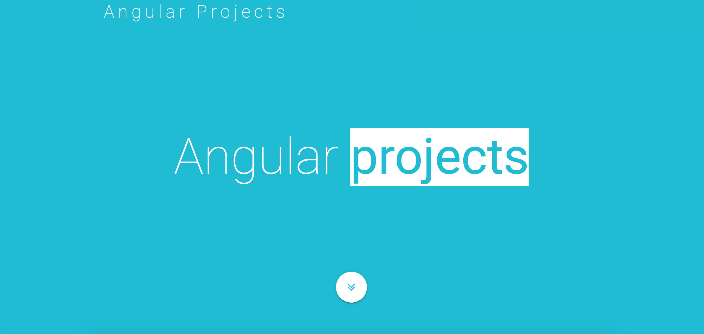

Frontend
Angular, React, TypeScript, RxJS, NgRx, Redux, Kendo UI, responsive UI, reusable component systems, and accessible workflows.
Senior Software Engineer · Full-Stack · Cloud-Native
I build enterprise software that scales - clean frontends, reliable APIs, observable cloud services.
8+ years designing, building, shipping, and supporting production systems across Angular, React, .NET, Python, and AWS. Currently exploring practical AI-assisted engineering.
What I bring
I work across the whole stack frontend architecture, backend APIs, distributed services, cloud deployment, testing, and production support.
Angular, React, TypeScript, RxJS, NgRx, Redux, Kendo UI, responsive UI, reusable component systems, and accessible workflows.
C#, .NET Core, ASP.NET Core Web API, Python, FastAPI, Entity Framework, REST APIs, microservices, messaging, and secure API design.
AWS Lambda, API Gateway, SNS, SQS, S3, CloudWatch, Azure DevOps, GitHub Actions, Datadog, Serilog, and on-call production support.
GitHub Copilot, Claude, prompt engineering, RAG workflows, automated test generation, and human-reviewed AI output in production.
Selected projects
Featured · AI project
Claude-powered production incident assistant. Feed it symptoms, logs, and runbooks - it returns a structured investigation brief: probable cause, evidence, next steps, and stakeholder-ready updates.

React app for exploring Wikipedia's most-read articles by date. Clean date-picker UI over the Wikimedia API.

Angular examples, reusable snippets, and Angular Material themes from earlier frontend work.
Learning & writing
Certifications, courses, and published writing.
Let's connect
I'm most interested in teams building complex, maintainable systems across frontend, backend, cloud, and production reliability. Happy to chat about full-time positions, contract projects, or technical collaboration.